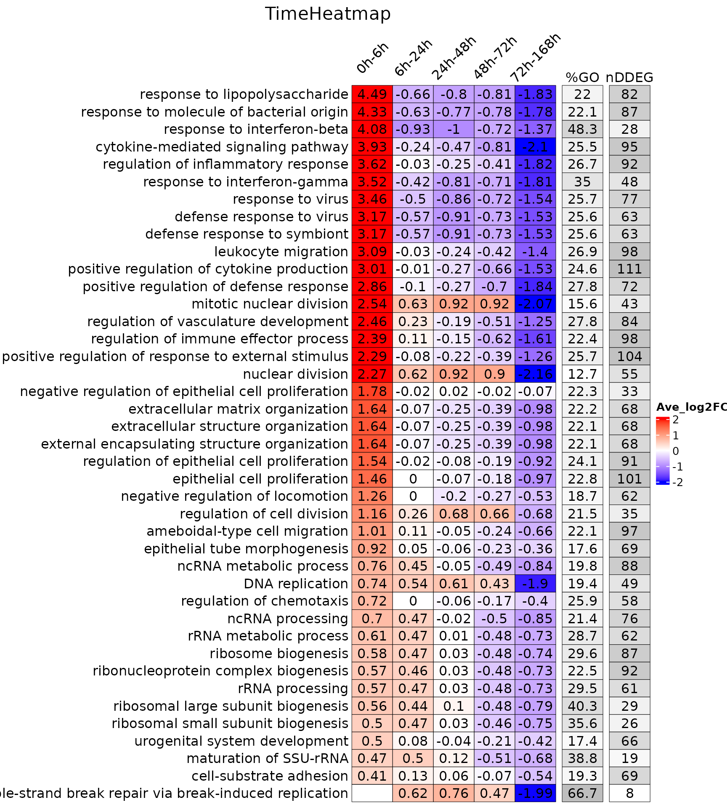

Time-Heatmap-GO.Rmd
library(TrendCatcher)
demo.master.list.path<-system.file("extdata", "BrainMasterList_Symbol.rda", package = "TrendCatcher")
load(demo.master.list.path)To draw Time-Heatmap using GO database, please use draw_TimeHeatmap_GO function. This function will return a list composed of a TimeHeatmap plot and a merge.df dataframe. Due to the limited size of Time-Heatmap for visualization, users can play with merge.df which includes all the GO enrichment analysis for each time window.
The full version of GO enrichment output.
# To save time, directely load from extdata
demo.time.heatmap.path<-system.file("extdata", "Brain_TimeHeatmap.rda", package = "TrendCatcher")
load(demo.time.heatmap.path)
names(time_heatmap)## [1] "time.heatmap" "merge.df" "GO.df"Print out TimeHeatmap from the time_heatmap list object.
print(time_heatmap$time.heatmap)
Check all the enriched GO terms.
head(time_heatmap$merge.df[,1:5])## ID Description
## 0h-6h.GO:0042254 GO:0042254 ribosome biogenesis
## 0h-6h.GO:0001819 GO:0001819 positive regulation of cytokine production
## 0h-6h.GO:0022613 GO:0022613 ribonucleoprotein complex biogenesis
## 0h-6h.GO:0019221 GO:0019221 cytokine-mediated signaling pathway
## 0h-6h.GO:0050727 GO:0050727 regulation of inflammatory response
## 0h-6h.GO:0009615 GO:0009615 response to virus
## p.adjust GeneRatio BgRatio
## 0h-6h.GO:0042254 4.797111e-34 84/1268 294/23355
## 0h-6h.GO:0001819 9.136232e-29 97/1268 452/23355
## 0h-6h.GO:0022613 6.541570e-27 89/1268 408/23355
## 0h-6h.GO:0019221 4.570376e-25 82/1268 372/23355
## 0h-6h.GO:0050727 1.076822e-24 78/1268 344/23355
## 0h-6h.GO:0009615 2.417513e-24 72/1268 300/23355Check top enriched GO terms average log2FC within each time window.
head(time_heatmap$GO.df[,1:5])## ID Description t.name direction
## 1 GO:0042254 ribosome biogenesis 0h-6h Activation
## 2 GO:0042254 ribosome biogenesis 6h-24h Activation
## 3 GO:0042254 ribosome biogenesis 24h-48h Activation
## 4 GO:0042254 ribosome biogenesis 48h-72h Deactivation
## 5 GO:0042254 ribosome biogenesis 72h-168h Deactivation
## 6 GO:0001819 positive regulation of cytokine production 0h-6h Activation
## Avg_log2FC
## 1 0.5758218
## 2 0.4704128
## 3 0.0269940
## 4 -0.4836805
## 5 -0.7361026
## 6 3.0076572Sometimes GO terms are redundant, users can select manually non-redundant GOs using function below.
go.terms<-unique(time_heatmap$GO.df$Description)[1:5]
time_heatmap_selGO<-draw_TimeHeatmap_selGO(time_heatmap = time_heatmap, sel.go = go.terms, master.list = master.list, GO.perc.thres = 0, nDDEG.thres = 0, save.tiff.path = NA)To look at which genes are involved within the TimeHeatmap above. We can call draw_GOHeatmap function. This function is useful when one is comparing multiple projects.
go.terms<-c("response to lipopolysaccharide",
"response to interferon-beta",
"cytokine-mediated signaling pathway",
"response to interferon-gamma",
"response to virus",
"leukocyte migration",
"mitotic nuclear division",
"regulation of vasculature development",
"extracellular structure organization",
"regulation of epithelial cell proliferation")
gene.GO.df<-draw_GOHeatmap(master.list = master.list, time.window = "0h-6h",
go.terms = go.terms, merge.df = time_heatmap$merge.df,
logFC.thres = 5)The data.frame gene.GO.df contains all the genes we found through TrendCatcher without logFC threshold.
head(gene.GO.df)## type Description gene logFC.prev.bk prev.bk.t
## 1 Activation cytokine-mediated signaling pathway Ccl3 5.951150 0
## 2 Activation cytokine-mediated signaling pathway Ccl11 6.495073 0
## 3 Activation cytokine-mediated signaling pathway Tnf 32.479065 0
## 4 Activation cytokine-mediated signaling pathway Il6 10.157610 0
## 5 Activation cytokine-mediated signaling pathway Il1r2 32.384983 0
## 6 Activation cytokine-mediated signaling pathway Il1rn 8.137336 0
## Symbol
## 1 Ccl3
## 2 Ccl11
## 3 Tnf
## 4 Il6
## 5 Il1r2
## 6 Il1rn